Sofascore — live scores for every sports fan. (2019 – 2026)
Sofascore follows thousands of competitions across dozens of sports in real time — scores, statistics, player ratings, predictions and a personal feed — for millions of fans on the web, iOS and Android.
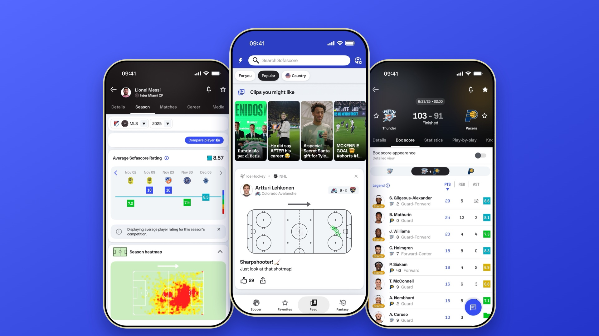
My role
As Product Design Principal I worked across the whole product, together with designers, engineers, product and research.
Design & direction
Overall product design and design direction across web, iOS and Android.
Technical collaboration
Working closely with development on the technical side, with clear specifications for every feature.
UI design system
Building and maintaining the shared UI design system behind every platform.
Prototyping
Prototypes to explore ideas, align the team and test flows before they are built.
UX research
Collaboration with the UX Research team to bring real user insight into design decisions.
The numbers behind every game
A box score has to work at a glance and in depth. Players are grouped by team, sorted by points, and every row ends with the Sofascore Rating — one colour-coded number that sums up a performance.
Across a season, those ratings add up to an average that tells the story of a player’s form, next to a heatmap of where they play.
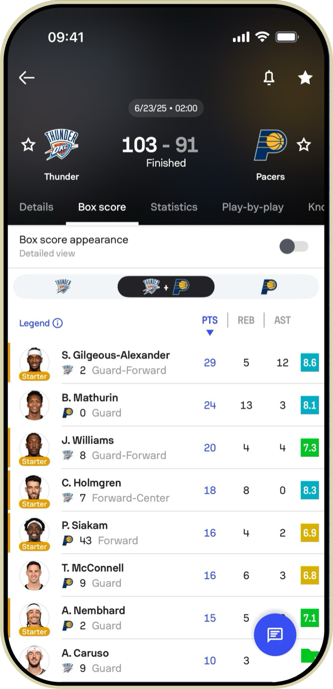
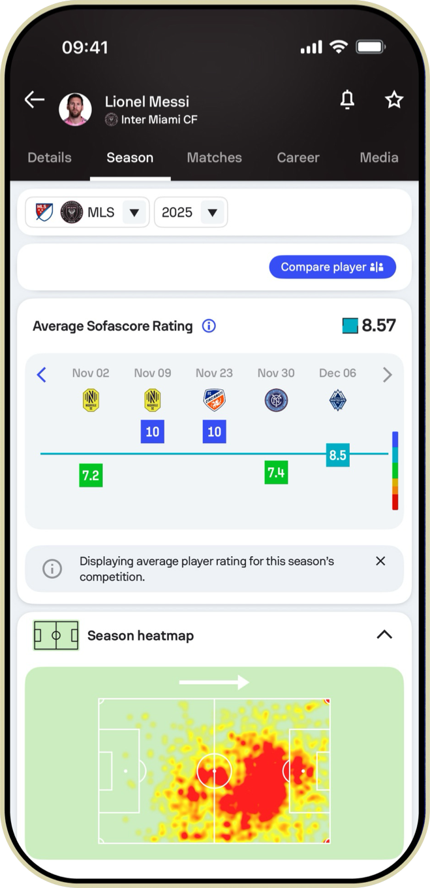
Players, in depth
Every player has a living profile: rankings, form, career records, prize money and personal details — on the phone and on the iPad.
Comparing players or looking back through a season takes one tap — the data stays dense, but the layout stays calm.
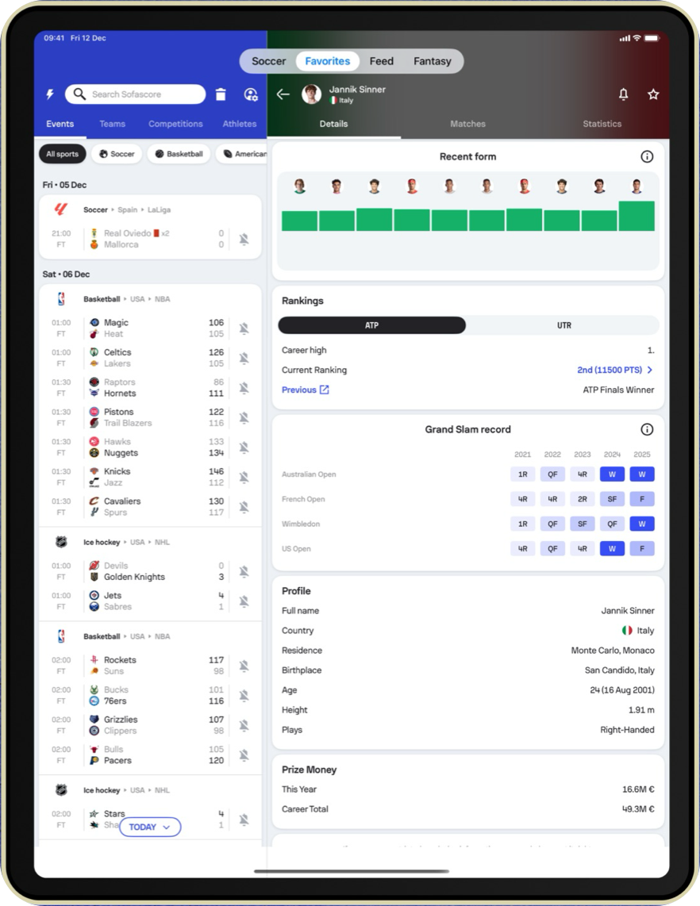
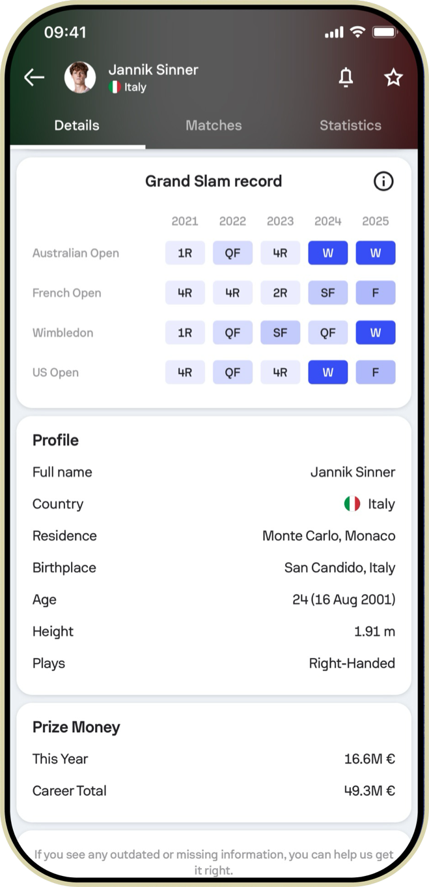
Predictions & AI insights
Before kick-off, fans see result probabilities, expert predictions and AI-generated insights — and after the match, whether the forecast was right.
On Android the same match centre sits next to every player’s season rating.
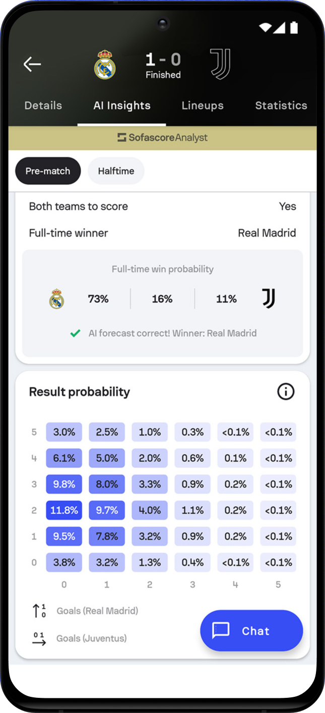
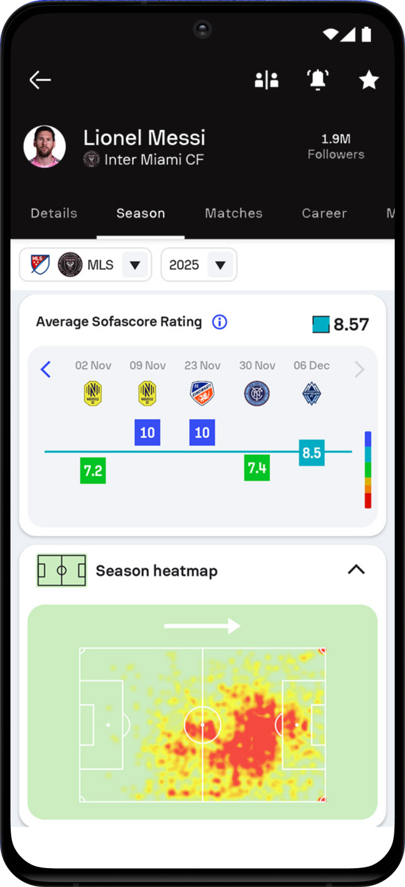
A feed made for you
The feed brings clips, shot maps and stories from the teams and players you follow — so the app is worth opening even between matches.
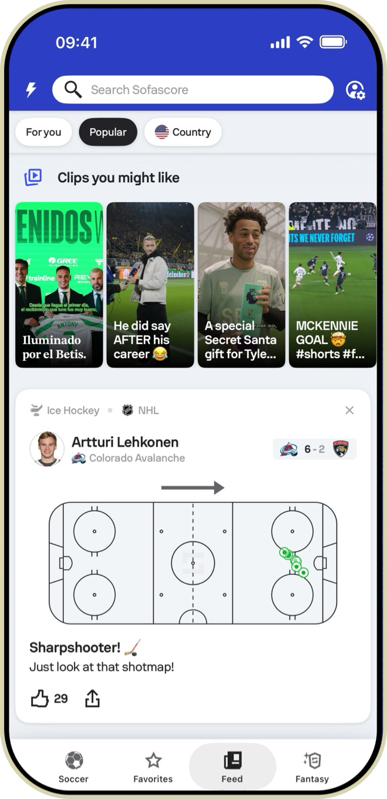
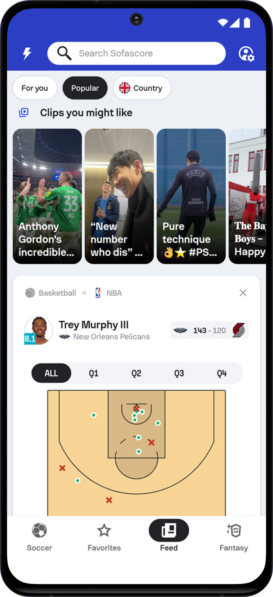
Every sport, every league
From the FIFA World Cup and the NBA to Wimbledon and UFC — fans pin their favourite competitions and build their own home screen, on Android and on iPad.
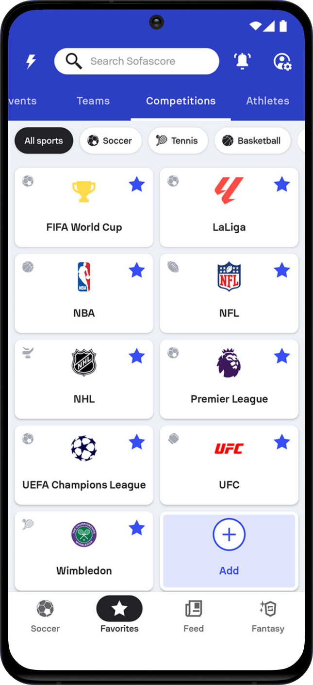
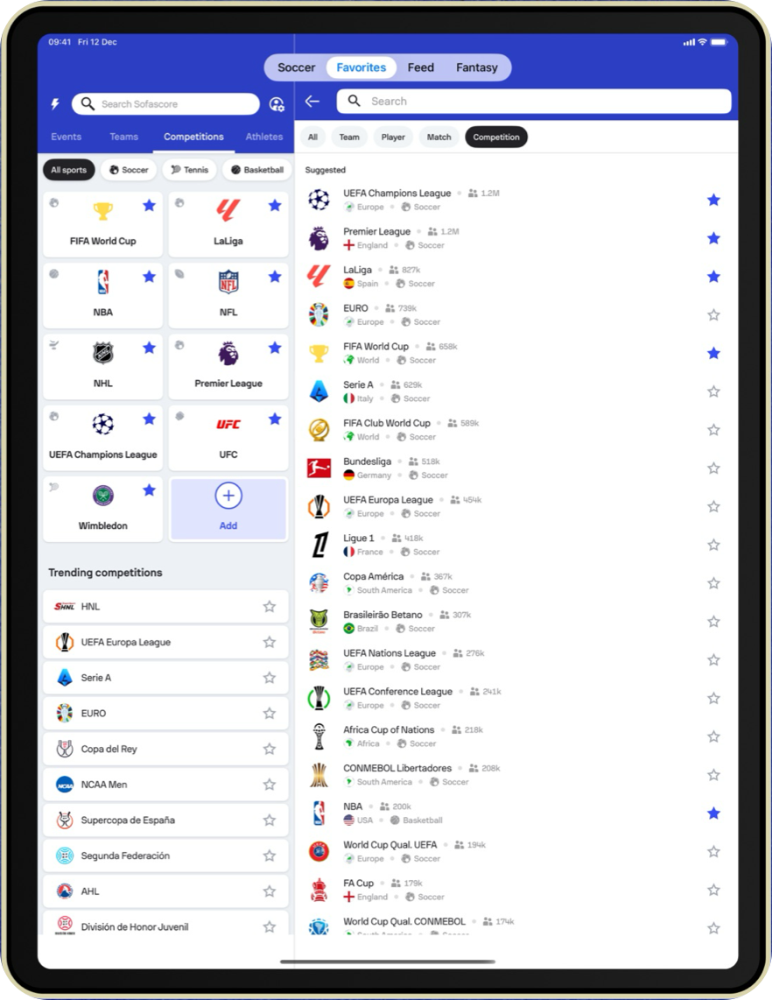
Bigger screens
On iPad the layout opens up into side-by-side lists, match details and highlights, with more of the story visible at once.
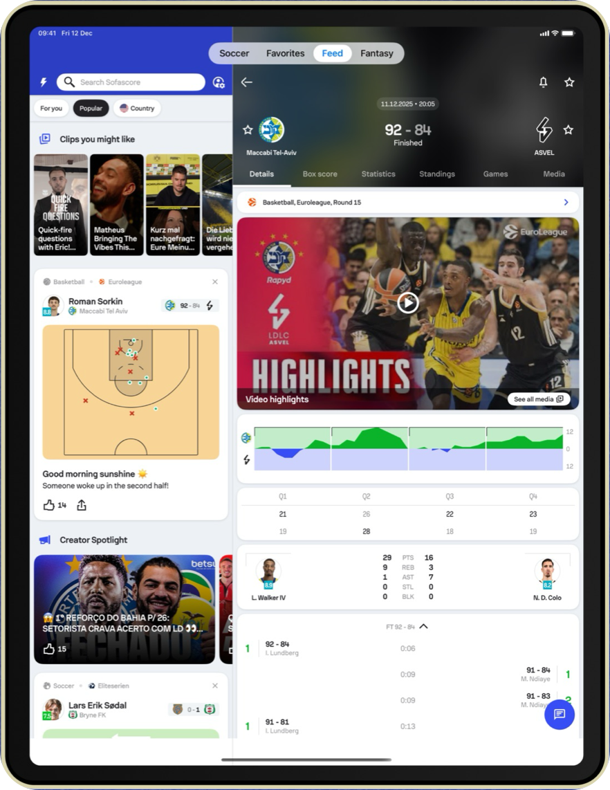
Try it yourself
Sofascore is free on the web, on iPhone and iPad, and on Android.